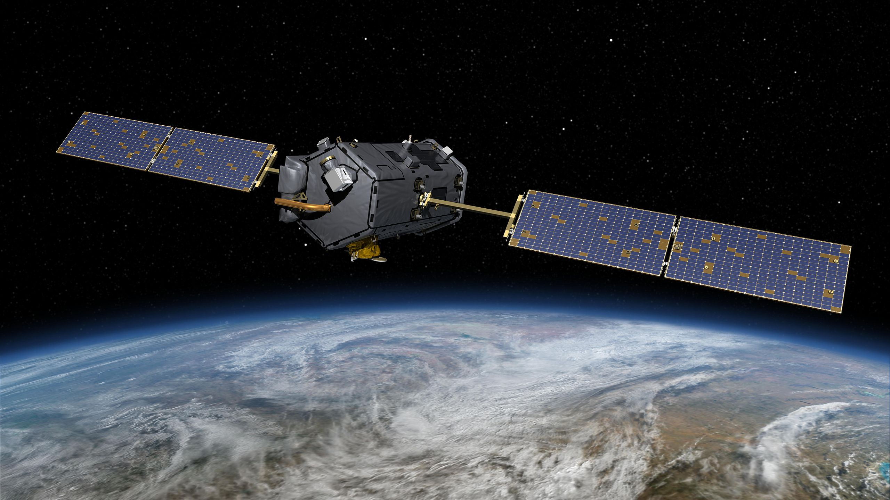

Ref : https://en.wikipedia.org/wiki/Orbiting_Carbon_Observatory
https://en.wikipedia.org/wiki/Orbiting_Carbon_Observatory_2
Orbiting Carbon Observatory
The Orbiting Carbon Observatory (OCO) is a NASA satellite mission intended to provide global space-based observations of atmospheric carbon dioxide (CO2).
The original spacecraft was lost in a launch failure on 24 February 2009, when the payload fairing of the Taurus rocket which was carrying it failed to separate during ascent.[2]
The added mass of the fairing prevented the satellite from reaching orbit.[3] It subsequently re-entered the atmosphere and crashed into the Indian Ocean near Antarctica.[4][5] The replacement satellite, Orbiting Carbon Observatory 2, was launched 2 July 2014 aboard a Delta II rocket.[6][7] The Orbiting Carbon Observatory 3, a stand-alone payload built from the spare OCO-2 flight instrument, will be installed on the International Space Station's Kibō Exposed Facility in December 2016.[8]
Orbiting Carbon Observatory 2
Orbiting Carbon Observatory 2 (OCO-2) is an American environmental science satellite which launched on 2 July 2014. A NASA mission, it is a replacement for the Orbiting Carbon Observatory which was lost in a launch failure in 2009.
| Mission type | Climatology |
|---|---|
| Operator | NASA |
| COSPAR ID | 2014-035A |
| SATCAT № | 40059 |
| Website | http://oco.jpl.nasa.gov/ |
| Mission duration | Planned: 2 years Elapsed: 1 year, 10 months and 17 days |
| Spacecraft properties | |
| Bus | LEOStar-2 |
| Manufacturer | Orbital Sciences[1] |
| Launch mass | 454 kg (1,001 lb)[1] |
| Dry mass | 409 kg (902 lb) |
| Payload mass | 131 kg (289 lb)[1] |
| Dimensions | Stowed: 2.12 × 0.94 m (6.96 × 3.08 ft)[1] |
| Power | 815 W[1] |
